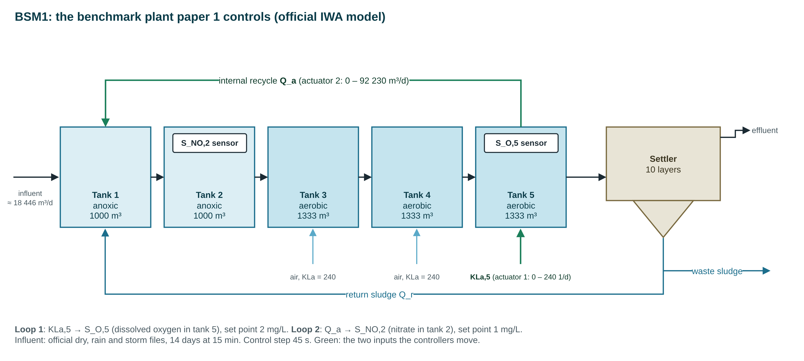
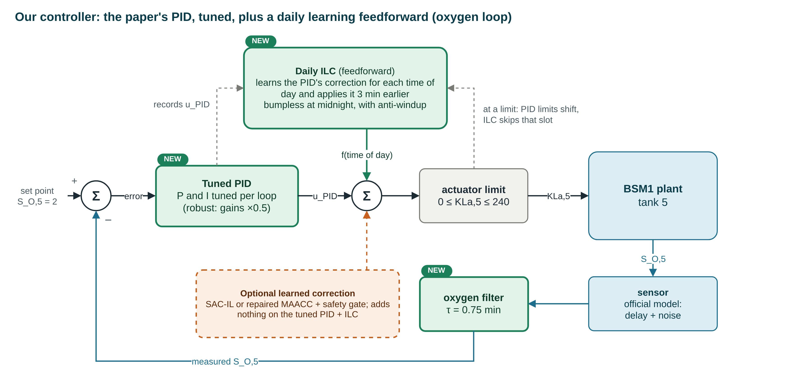

Machine learning and reinforcement learning, explained with one real research project: learning to control a wastewater treatment plant (the IWA BSM1 benchmark).
Part 1 explains how any machine-learning project goes, one step per slide, on a simple example. Parts 2 and 3 do the same steps on our research project, with its real files and code.
| Part 1 | The basics · 40 min · Collect, clean, inputs and target, split, scale, feed the data in, what a model is, kinds of learning and of models, training code, testing code, how many parameters, choosing the settings, the whole skeleton notebook. |
| Part 2 | Our project: plant data to a forecaster · 30 min · The BSM1 plant, its Excel files, how we cleaned them (including a physics fix), cut them into examples, chose a model and trained it. |
| Part 3 | Reinforcement learning and our controller · 20 min · Learning from a reward instead of right answers, then the project's agents, the published methods we rebuilt, and our latest results. |
Each part ends with a few questions and a notebook you run yourself.
Open a terminal in the workshop folder:
pip install -r workshop/requirements.txt jupyter lab workshop/notebooks
The whole lesson is written out, slide by slide, in the teaching guide. The notebooks are also web pages with every result: notebook 0, notebook 1, notebook 2, notebook 3. No GPU needed; everything runs on a laptop CPU in seconds to a few minutes.
Click any word. Each one has a plain meaning, an everyday comparison, and where it shows up in our project. Come back to this slide whenever a word is new.
How any machine-learning project goes, one step per slide: from a raw file to a tested, saved model. The example is deliberately simple: predict tomorrow's water demand of a town from the weather.
Notebook 0: 00_ml_skeleton.ipynb, every step on the slides, runs in about 10 s.
Terminal: python workshop/examples/lesson1_knobs.py (a model with two knobs)
We take them one per slide. The example: a town wants to know tomorrow's water demand, and it has three years of daily records of temperature, rainfall and demand.
Grey: getting the data ready. Blue: the model, its training and its settings. Green: the final test and keeping the model. All twelve are cells in workshop/notebooks/00_ml_skeleton.ipynb.
# read it: one line, whatever the format import pandas as pd df = pd.read_csv("daily_demand.csv") # pd.read_excel("file.xlsx") pd.read_sql(query, conn) # then LOOK before doing anything else df.shape # (1096, 4): rows, columns df.dtypes # is each column the type you expect? df.head() # the first rows df.describe() # min and max: anything impossible?
In our example describe() already shows two problems: one demand value ten times too big, and a negative rainfall. Rain cannot be negative.
| Problem | How you find it | What you do |
|---|---|---|
| wrong type (dates as text) | df.dtypes | convert |
| duplicate rows | duplicated() | keep one |
| missing values | isna().sum() | short gap: fill from neighbours; long gap: drop |
| impossible values | ranges, physics | set to unknown, then fill or drop |
| spikes (typing or unit errors) | far from the local median | replace or drop |
df["date"] = pd.to_datetime(df["date"]) # type df = df.drop_duplicates("date") # duplicates df = df.sort_values("date").set_index("date") df.isna().sum() # count gaps df["temperature"] = df["temperature"].interpolate(limit=2) df.loc[df["rainfall"] < 0, "rainfall"] = np.nan # impossible df["rainfall"] = df["rainfall"].fillna(0) median = df["demand"].rolling(15, center=True).median() spike = (df["demand"] - median).abs() > 300 # spikes df.loc[spike, "demand"] = median[spike]
workshop/notebooks/00_ml_skeleton.ipynb, step 2
| date | temp tomorrow | rain tomorrow | weekend tomorrow | demand today | demand tomorrow |
|---|---|---|---|---|---|
| 2021-03-01 | 27.4 | 0.0 | 0 | 1 391 | 1 402 |
| 2021-03-02 | 28.1 | 11.6 | 0 | 1 402 | 1 371 |
| 2021-03-03 | 26.9 | 0.0 | 0 | 1 371 | 1 384 |
| … | X: 4 inputs per example | y: 1 target | |||
X = data[["temp_tomorrow", "rain_tomorrow", "weekend_tomorrow", "demand_today"]].to_numpy() y = data[["demand_tomorrow"]].to_numpy() X.shape, y.shape # (1094, 4) (1094, 1)
| pile | used for | how often |
|---|---|---|
| train | the model learns its knobs from it | every step |
| validation | we make choices with it: when to stop, how big a model | every epoch |
| test | the final, honest score | once, at the end |
Data in time order: split by time. Press "random split" to see why: neighbours are near-copies, so a random test set is mostly data the model has seen.
n = len(X) i_val, i_test = int(0.70 * n), int(0.85 * n) X_train, y_train = X[:i_val], y[:i_val] # learn X_val, y_val = X[i_val:i_test], y[i_val:i_test] # choose X_test, y_test = X[i_test:], y[i_test:] # judge # no time order (e.g. separate patients)? a random split is fine: # train_test_split(X, y, test_size=0.15, random_state=0)
The example column is a water flow (about 20 000 m³ a day). Next to a temperature of about 25, it would swamp every weighted sum. Networks learn best when every input is near 0 with a spread of about 1.
from sklearn.preprocessing import StandardScaler scaler = StandardScaler().fit(X_train) # TRAIN only X_train = scaler.transform(X_train) X_val = scaler.transform(X_val) # same mean, std X_test = scaler.transform(X_test) # same mean, std
Keep the scaler: every new input must be scaled with the same mean and std, for ever.
import torch from torch.utils.data import TensorDataset, DataLoader ds = TensorDataset(torch.tensor(X_train, dtype=torch.float32), torch.tensor(y_train, dtype=torch.float32)) train_dl = DataLoader(ds, batch_size=32, shuffle=True) xb, yb = next(iter(train_dl)) xb.shape, yb.shape # (32, 4) (32, 1)
A model is a function with knobs:
ŷ = w · x + b
x: input · ŷ: the model's guess for y · w, b: parameters, the knobs.
You have the right answer y for every x.
The loss compares the guess with y. Most of today is this.
There is no y. Find structure in X alone.
No right answers, only a score (a reward) after acting.
Part 3 of today.
Our demand example is supervised regression: for every past day we know the true demand of the next day.
| If your input is… | start with… |
|---|---|
| a table: examples × columns | linear model, decision trees (gradient-boosted trees), MLP (plain layers of neurons) |
| a sequence: examples × time × channels | 1-D CNN (a filter sliding along time), RNN / GRU / LSTM (a memory carried through time), Transformer |
| an image: examples × height × width × colours | CNN (filters sliding over the picture) |
| a decision with no right answer, only a reward | reinforcement learning |
| If your output is… | last layer · loss |
|---|---|
| a number (or several) | linear · MSE or MAE |
| one of several classes | softmax · cross-entropy |
| yes or no | sigmoid · binary cross-entropy |
| a range (with uncertainty) | quantiles · pinball loss |
from torch import nn loss_fn = nn.MSELoss() # a number loss_fn = nn.L1Loss() # MAE: robust to outliers loss_fn = nn.CrossEntropyLoss() # classes loss_fn = nn.BCEWithLogitsLoss() # yes / no loss = loss_fn(pred, y) # one number: how wrong
w ← w − lr · ∂loss/∂w
loss.backward().opt = torch.optim.Adam(model.parameters(), lr=1e-2) loss_fn = nn.MSELoss() for epoch in range(60): model.train() for xb, yb in train_dl: # 1 a batch pred = model(xb) # 2 forward loss = loss_fn(pred, yb) # 3 loss opt.zero_grad() loss.backward() # 4 gradients opt.step() # 5 update model.eval() with torch.no_grad(): # validation: no learning val = loss_fn(model(Xv), yv).item() if val < best: # keep the best epoch best, best_state = val, copy.deepcopy(model.state_dict())
A dense layer from n inputs to m outputs has n·m weights + m biases. The ratio to examples is a rough guide, not a law: weight decay, early stopping and simple architectures let you go further.
| parameters | settings (hyperparameters) | |
|---|---|---|
| examples | every weight and bias | number of layers and units, learning rate, batch size, epochs, regularisation |
| set by | training | you, before training |
| judged on | the training data | the validation data |
for hidden in [4, 16, 64]: for lr in [1e-3, 1e-2]: model = make_model(hidden) val, _ = train(model, lr=lr) # judged on validation results.append((hidden, lr, val))
| hidden | lr | parameters | validation loss |
|---|---|---|---|
| 16 | 0.01 | 97 | 0.222 |
| 64 | 0.01 | 385 | 0.261 |
| 4 | 0.01 | 25 | 0.299 |
| 4 | 0.001 | 25 | 0.317 |
| 64 | 0.001 | 385 | 0.321 |
| 16 | 0.001 | 97 | 0.323 |
The middle size wins: 4 units are too few to fit, 64 start to memorise. Bigger is not automatically better.
model.load_state_dict(best_state) # the best epoch model.eval() # switch off training mode with torch.no_grad(): # nothing is learned here pred = model(X_test_t) pred = pred.numpy() * y_std + y_mean # back to real units mae = np.abs(pred - y_test).mean() # baseline: "tomorrow = today" baseline = np.abs(X_test[:, 3:4] - y_test).mean()
test error, model: 44.4 thousand litres per day test error, baseline: 56.7 thousand litres per day
# 0 imports and seeds import numpy as np, pandas as pd, torch from torch import nn; torch.manual_seed(0) # 1 collect df = pd.read_csv("daily_demand.csv") # 2 clean (after looking: shape, dtypes, describe) df.describe(); df = df.drop_duplicates("date") df["temperature"] = df["temperature"].interpolate(limit=2) # 3 inputs and target X = data[inputs].to_numpy(); y = data[[target]].to_numpy() # 4 split by time X_train, X_val, X_test = X[:i_val], X[i_val:i_test], X[i_test:] # 5 scale with training numbers only mean, std = X_train.mean(0), X_train.std(0) # 6 feed: tensors and batches train_dl = DataLoader(TensorDataset(Xt, yt), batch_size=32, shuffle=True)
# 7 model model = nn.Sequential(nn.Linear(4, 16), nn.ReLU(), nn.Linear(16, 1)) # 8 train, keep the best validation epoch for epoch in range(60): for xb, yb in train_dl: loss = loss_fn(model(xb), yb) opt.zero_grad(); loss.backward(); opt.step() # validation loss → keep best_state # 9 size: count the parameters sum(p.numel() for p in model.parameters()) # 97 # 10 settings: try a few on validation for hidden in [4, 16, 64]: ... # 11 test once, real units, against a baseline model.eval(); pred = model(X_test_t) # 12 save weights + scaler + settings torch.save({"weights": model.state_dict(), "mean": mean, ...}, path)
Every notebook you meet, including the project's, is these blocks in this order, with more detail inside each. When a notebook confuses you, find which of the twelve steps a cell belongs to.
Open workshop/notebooks/00_ml_skeleton.ipynb and run it from top to bottom (Shift + Enter). It takes about 10 seconds. Or read it as a web page with all the results.
demand_today from the inputs. How much worse is the test error?hidden to 256. More parameters: better or worse on validation?The smallest model there is, two knobs, trained in the terminal:
python workshop/examples/lesson1_knobs.py
Ask the room first. Then click a question (or press →) to show the answer.
The same steps on our research project: the BSM1 plant, its official Excel files, our cleaning (with a physics fix), cutting a time series into examples, choosing a model for it, training and testing it.
Notebook 1 (collect, clean, prepare) and notebook 2 (choose and train)
Terminal: lesson2_load_and_clean.py to lesson5_train_and_evaluate.py
| Task | Kind | Folder |
|---|---|---|
| Forecast the inflow 2 h ahead | supervised · regression | forecast/ |
| Will ammonium break the limit? | supervised · classification | warning/ |
| Predict how the plant responds | supervised · sequence model | twin/ |
| Decide how much air to blow | reinforcement learning | rl/, sacil/ |
Today we follow the first one end to end, then see how the others differ.

Water flows left to right. Tanks 1 and 2 get no air, so bacteria there remove nitrate. Tanks 3 to 5 are aerated, so bacteria there turn ammonium into nitrate. The internal recycle Qa carries that nitrate back to tank 1. The settler lets the sludge sink, and most of it goes back to the start. Our controllers move two things: the air in tank 5 (KLa5) and the recycle pump (Qa). Diagram: docs/diagrams/d0_plant.drawio.
| day | Q [m³/d] | SNH [g/m³] |
|---|
bsm1/influent.py). Notebook 1 loads the official files.# src/wwtp/official/plant.py _SRC = "https://raw.githubusercontent.com/davidfernand/" "BSM1_in_Python/{rev}/code/Influent%20files/{name}" _REV = "5dadb209a5a34ecb0e2f83a2e79c060bf3470582" # pinned commit def _official_table(weather): npy = os.path.join(cache, weather + ".npy") if os.path.exists(npy): return np.load(npy) # cached urllib.request.urlretrieve(_SRC.format(...), xlsx) ws = openpyxl.load_workbook(xlsx, read_only=True).worksheets[0] rows = [r[:15] for r in ws.iter_rows(values_only=True) if r and isinstance(r[0], (int, float))] # numbers only arr = np.array(rows, dtype=float) np.save(npy, arr) return arr
.npy loads in milliseconds.| Time | S_I | S_S | … | S_NH | Q |
| [d] | [g/m3] | [g/m3] | … | [g/m3] | [m3/d] |
| 8.4271 | 30 | 51.2 | … | 28.9 | 24 515 |
| 8.4375 | 30 | #N/A | … | 28.4 | 26 870 |
| 8.4375 | 30 | 50.3 | … | 28.4 | 26 870 |
| 8.4479 | 30 | 49.8 | … | 284.0 | 29 102 |
| 8.4583 | 30 | 48.1 | … | 27.1 | 41 335 |
| 8.4688 | 30 | 46.9 | … | 26.0 | 48 012 |
A made-up excerpt showing typical problems. The official files are tidy except for the S_I column; the dirty cases come up in notebook 1 on a deliberately damaged copy.
S_I = 30·Qdry/Q, and the project applies the same rule (plant.py:89).plant.py:90).docs/DATASET.md §3.3). Someone must be able to rebuild your dataset from your notes.Sensors sample every 15 min, but the controller acts every 45 s. Between samples the influent is held constant (a zero-order hold): 20 control steps per sample.
# src/wwtp/official/plant.py:144 official_series(): one row of the file for every 45-s step t = np.arange(n) * dt_seconds / 86400.0 idx = np.minimum(np.searchsorted(d[:, 0], t, side="right") - 1, len(d) - 1) # last sample at or before t flow = d[idx, 15]
The same steps in the hands-on script, the notebook and the project. Run it yourself: python workshop/examples/lesson2_load_and_clean.py
# src/wwtp/forecast/dataset.py:67 LOOKBACK = 96 (24 h), HORIZON = 8 (2 h) def _windows(obs, stride): n = obs.shape[0] - LOOKBACK - HORIZON starts = np.arange(0, n, stride) xs = np.stack([obs[s:s+LOOKBACK] for s in starts]) # past ys = np.stack([obs[s+LOOKBACK:s+LOOKBACK+HORIZON] for s in starts]) # future return xs, ys
Our data is one long series, not a table, so we cut it into examples: the last 24 h in, the next 2 h out. The input window ends exactly where the target begins, so the model only sees the past, as it will on the plant.
Split: train = dry weather + rain week 2; validation = the first storm; test = the second storm. Scaling uses the training numbers only, as in part 1.
Short on time? The same steps in one terminal command: python workshop/examples/lesson2_load_and_clean.py then lesson3_prepare.py
prepared.npzworkshop/notebooks/01_data_collect_clean_prepare.ipynb · or read it as a web page with all the results
Forecast: input X is a sequence, (N, 96, 3): 96 time steps of flow, ammonium and COD. Output y is (N, 8): the next 8 flows.
By the table in part 1: a sequence in, numbers out. So a 1-D CNN (or a recurrent network), with a linear last layer and an MSE or pinball loss.
And as always: baselines first (no learning), then a linear model, then an MLP, then the CNN.
The other parts of the project have other shapes, so other models. Click them on the right.
F.pad(x, (pad, 0)), forecast/models.py:38).The same steps in the hands-on script, the notebook and the project. Run it yourself: python workshop/examples/lesson5_train_and_evaluate.py
warning/baselines.py).Oxygen tracking error on the test week, change against paper 1's PID (README, mean of runs). Lower is better.
Short on time? The same steps in one terminal command: python workshop/examples/lesson4_models.py and python workshop/examples/lesson5_train_and_evaluate.py
| model | params | test MAE, 2 h |
|---|---|---|
| persistence | 0 | … |
| yesterday | 0 | … |
| linear | … | … |
| MLP | … | … |
| causal CNN | … | … |
workshop/notebooks/02_choose_and_train_a_model.ipynb · or read it as a web page with all the results
Ask the room first. Then click a question (or press →) to show the answer.
Learning from a reward instead of right answers. Then the project itself: how it was built, the published methods we rebuilt, our controller and the latest results.
Notebook 3: reinforcement learning in brief
Terminal: python workshop/examples/lesson6_rl.py
| Supervised | Reinforcement | |
|---|---|---|
| data | a fixed dataset | collected by acting |
| signal | the right answer y | a reward, often late |
| learns | x → y | state → action (policy) |
| risk | wrong predictions | wrong actions on a plant |
# src/wwtp/rl/rewards.py:39 paper 2, energy + ammonium def reward_ae_eq(info, b1=1.0, b2=0.42): return -(b1 * info["aeration_fraction"] + b2 * max(info["S_NH"] - 4.0, 0))
The reward is where you write down what you want. Paper 2's agent saved 9 % energy, but it also broke the ammonium limit far more often: it followed the reward exactly as written.
reset(), step(action) → next state, reward, done (rl/env.py)# src/wwtp/rl/ddpg.py:214 one update o, a, r, o2, d = buffer.sample(256) with torch.no_grad(): # Bellman target y = r + gamma*(1-d)*critic_target(o2, actor_target(o2)) loss_c = ((critic(o, a) - y)**2).mean() # critic: regression! loss_c.backward(); opt_critic.step() loss_a = -critic(o, actor(o)).mean() # actor: climb Q loss_a.backward(); opt_actor.step() soft_update(actor, actor_target, tau=0.001)
The critic is trained exactly like a supervised regression, against a target it makes for itself. Same loop, same optimiser, same loss.
Short on time? The same steps in one terminal command: python workshop/examples/lesson6_rl.py
reset() and step(), driven by the real daily loadChange the energy weight in the reward. What does the agent do with the oxygen? Is it still doing what you wanted?
workshop/notebooks/03_reinforcement_learning_in_brief.ipynb · or read it as a web page with all the results
# src/wwtp/sacil/sacil.py:279 def pretrain_bc(self, steps=4000): for _ in range(steps): o, a, *_ = self.demo.sample(self.cfg.batch, self.rng) mu, _ = self.actor(o) loss = F.mse_loss(torch.tanh(mu), a) # plain regression self.opt_a.zero_grad(); loss.backward(); self.opt_a.step()

Our controller as it stands now (docs/diagrams/d2_ours.drawio). Green boxes were added after held-out test 1.
docs/PAPER1_HELDOUT2.md).| Oxygen error, days 7–14 (lower is better) | new influent | overload | official sensors | both |
|---|---|---|---|---|
| Paper's PID | 0.0105 | 0.0815 | 0.261 | 0.178 |
| Tuned PID + ILC | 0.00115 | 0.120 | 0.382 | 0.267 |
| … with anti-windup | 0.00115 | 0.0732 | all failed | 5 of 6 failed |
| Robust (filter, ×0.5, anti-windup) | 0.0018 | 0.0737 | 0.269 | 0.220 |
| Ours, round 2 (with SAC-IL) | 0.0024 | 0.108 | all failed | 25 of 30 failed |
Ask the room first. Then click a question (or press →) to show the answer.
Collected by going through this lesson from scratch. Click a question (or press →).
src/wwtp/ (library), experiments/ (numbered scripts), docs/REPORT.md (every result), workshop/ (these slides and the notebooks).